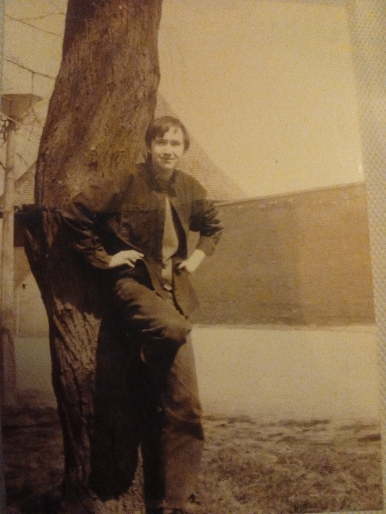

KECSKE - MÉT
Lulu

Ide kerül az oldal tartalma. A kép balra helyezkedik el, a szöveg pedig a kép köré igazodik. Ide kerül az oldal tartalma. A kép balra helyezkedik el, a szöveg pedig a kép köré igazodik. Ide kerül az oldal tartalma. A kép balra helyezkedik el, a szöveg pedig a kép köré igazodik. Ide kerül az oldal tartalma. A kép balra helyezkedik el, a szöveg pedig a kép köré igazodik. Ide kerül az oldal tartalma. A kép balra helyezkedik el, a szöveg pedig a kép köré igazodik. Ide kerül az oldal tartalma. A kép balra helyezkedik el, a szöveg pedig a kép köré igazodik. Ide kerül az oldal tartalma. A kép balra helyezkedik el, a szöveg pedig a kép köré igazodik. Ide kerül az oldal tartalma. A kép balra helyezkedik el, a szöveg pedig a kép köré igazodik. Ide kerül az oldal tartalma. A kép balra helyezkedik el, a szöveg pedig a kép köré igazodik. Ide kerül az oldal tartalma. A kép balra helyezkedik el, a szöveg pedig a kép köré igazodik. Ide kerül az oldal tartalma. A kép balra helyezkedik el, a szöveg pedig a kép köré igazodik.
Tartalom2

Ide kerül az oldal tartalma. A kép balra helyezkedik el, a szöveg pedig a kép köré igazodik. Ide kerül az oldal tartalma. A kép balra helyezkedik el, a szöveg pedig a kép köré igazodik. Ide kerül az oldal tartalma. A kép balra helyezkedik el, a szöveg pedig a kép köré igazodik. Ide kerül az oldal tartalma. A kép balra helyezkedik el, a szöveg pedig a kép köré igazodik. Ide kerül az oldal tartalma. A kép balra helyezkedik el, a szöveg pedig a kép köré igazodik. Ide kerül az oldal tartalma. A kép balra helyezkedik el, a szöveg pedig a kép köré igazodik. Ide kerül az oldal tartalma. A kép balra helyezkedik el, a szöveg pedig a kép köré igazodik. Ide kerül az oldal tartalma. A kép balra helyezkedik el, a szöveg pedig a kép köré igazodik. Ide kerül az oldal tartalma. A kép balra helyezkedik el, a szöveg pedig a kép köré igazodik. Ide kerül az oldal tartalma. A kép balra helyezkedik el, a szöveg pedig a kép köré igazodik. Ide kerül az oldal tartalma. A kép balra helyezkedik el, a szöveg pedig a kép köré igazodik.
fotó
Copyright "A.K.K." Informatikai Bt. - 2021